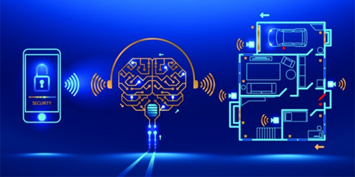

Interacción Humano Ordenador
La interacción persona-computadora o persona-ordenador (IPO) es la disciplina dedicada a diseñar, evaluar e implementar sistemas informáticos interactivos para el uso humano, y a estudiar los fenómenos relacionados más significativos. Es el estudio sobre cómo se diseñan, implementan y usan los sistemas informáticos interactivos y la manera que influyen los ordenadores en los individuos, las organizaciones y la sociedad. 12 Estos estudios son una especialización dentro de la ergonomía, el campo multidisciplinar que actúa sobre el diseño de las máquinas y del entorno de trabajo para facilitar su uso y adecuarlo a las condiciones fisiológicas, anatómicas, psicológicas y capacidades del usuario.
Objetivos
La interacción persona-computadora estudia la forma en que los seres humanos hacen o no uso de artefactos, sistemas e infraestructuras computacionales. Debido a esto, gran parte de la investigación en este campo busca mejorar la relación humano-computadora mejorando la usabilidad de las interfaces de los ordenadores.
Es por eso que gran parte de la investigación en este campo se centra en:
Métodos para diseñar nuevas interfaces de ordenadores, y así optimizar el diseño de una propiedad que se desee, como por ejemplo la capacidad de aprendizaje o la eficiencia de uso.
Métodos para implementar las interfaces, por ejemplo, por medio de bibliotecas informáticas.
Métodos para evaluar y comparar interfaces con respecto a sus propiedades, como por ejemplo su usabilidad.
Métodos para estudiar el uso de los ordenadores y sus implicaciones socioculturales.
Modelos y teorías sobre el uso humano de los ordenadores, así como marcos de referencia conceptuales para el diseño de interfaces, como modelos de usuario cognitivistas, la teoría de la actividad o consideraciones etnometodológicas sobre el uso de ordenadores en humanos.
Perspectivas que reflexionen críticamente sobre los valores que subyacen en el diseño computacional, el uso de computadoras y la investigación de la interacción persona-computadora.
Sacrificios del diseño.